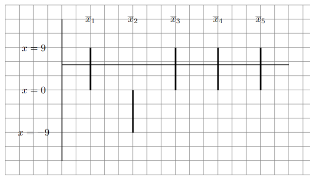

Classical search algorithms are fundamental techniques used in computer science to locate a specific item within a collection of items. Common approaches include linear search, where each item is checked sequentially until the target is found, and binary search, which efficiently narrows down the search range in a sorted array by repeatedly dividing it in half. These methods are crucial in various applications, from database retrieval to optimization problems, as they determine how quickly and efficiently data can be accessed and processed. However, classical search often requires significant time and resources, especially with large datasets. Quantum computing has the potential to revolutionize search algorithms through methods like Grover’s algorithm, which can search an unsorted database quadratically faster than classical algorithms, offering a profound improvement in speed and efficiency for large-scale search problems.
To implement Grover’s algorithm, we need unitary matrix, written as \(U_f\text{.}\) This matrix works as a black box as following
\begin{gather}
O = - I + 2\ket{\phi}\bra{\phi}\tag{3.2.2}
\end{gather}
Household transform is is a linear algebra technique often used to construct quantum operations that reflect a quantum state about a certain axis or state, which is a crucial step in many quantum algorithms, including Grover’s algorithm. By applying a series of these transformations, one can systematically manipulate and amplify the amplitude of the desired state while diminishing the amplitudes of the undesired ones, ultimately leading to a more efficient search process. This method contributes to the algorithm’s overall quadratic speedup compared to classical search methods.
Now, we implement Grover’s algorithm for the following example
The item (4).b and eq. (3.1.11) show same results, the second report implies linear algebra operations.
This example emphasizes on invert amplitudes about the mean; however, Grover’s algorithm requires phase inversion. The following example explains the step.
And suppose we are looking for the second input, it meansx=x_2=w\(\)is the winner, it is oul goal.\(\boldsymbol{\overline{x}}^T=\begin{pmatrix}
9&-9&9&9&9
\end{pmatrix}.\)
Now we apply

Figure3.2.5.Representation of the \(\overline{x}_i\) values. The horizontal line is the new average\(\frac{9-9+9+9+9}{5} = 5.4\)and calculate
We can see how the amplitude for the second element increases.
We showed how this search algorithm works, and it is clear that we will get the second element in the list as the most probable output.
This part shows the Grover’s algorithm in bracket notation.
This algorithm enables this search method to be speed up to\(\mathcal{O}(\sqrt{N})\) operations. With this algorithm "searching an unsorted database" with \(N=2^n\) elements in \(\mathcal{O}(\sqrt{N})\) time. Classical algorithm needs on average \(N/2 =\mathcal{O}(\sqrt{N})\) time. The goal is find \(w\text{,}\) given an oracle \(U_f\) with